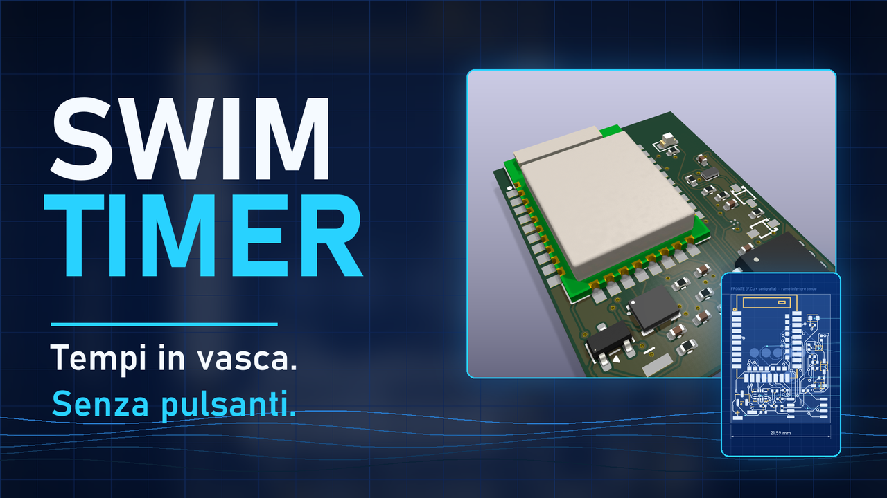
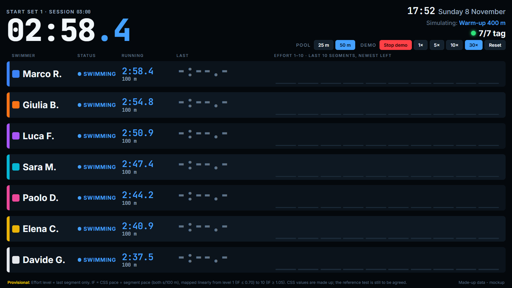

Il tag sotto la cuffia
Una scheda grande poco più di un francobollo, con accelerometro e giroscopio a sei assi e un microcontrollore Bluetooth a basso consumo. Sta sotto la cuffia, resiste all'acqua e si ricarica in una custodia.
Progetto aperto · prototipo in sviluppo
Un piccolo tag sotto la cuffia e un display a bordo vasca riconoscono da soli partenza, virate e arrivo. Tu nuoti: i tempi si prendono da soli, senza fermarti e senza guardare l'orologio.
L'area riservata è per i membri approvati del progetto: dopo l'accesso, l'amministratore approva l'account.

Il sensore decide, non la radio: il Bluetooth a 2,4 GHz non attraversa l'acqua, quindi i tempi nascono dal movimento e il Bluetooth serve solo fuori dall'acqua.
Una scheda grande poco più di un francobollo, con accelerometro e giroscopio a sei assi e un microcontrollore Bluetooth a basso consumo. Sta sotto la cuffia, resiste all'acqua e si ricarica in una custodia.
La spinta sul muro, la rotazione della virata, la bracciata regolare e la quiete finale hanno firme riconoscibili nei dati grezzi. Il tag le individua e memorizza partenza, virate e arrivo.
Quando esci dall'acqua il tag si riconosce con il display, scarica i tempi e li mostra: tempi per vasca, riposi, ritmo. Nessun pulsante da premere nuotando.
Prototipo con sensore inerziale e display a lancette per il ritmo: funziona sul banco, non ancora in vasca.
Una scheda commerciale registra i dati grezzi a 208 Hz nella memoria interna, con avvio dal doppio tocco e scarico via USB.
Scheda su misura a quattro strati, completa di file di produzione. Ordine non ancora effettuato.
Prima dei filtri servono dati veri annotati a mano: il nuotatore viene ripreso con il telefono e ogni evento viene marcato sul video, fotogramma per fotogramma.
Il codice, i file della scheda e la documentazione sono pubblici su GitHub.
Grafici dimostrativi costruiti con dati inventati (nessuna registrazione reale): servono a mostrare che cosa si cerca nei dati grezzi.
Uno schermo grande a bordo vasca riceve via Bluetooth i tempi di ogni nuotatore: da lontano si legge subito chi sta nuotando, chi riposa e come va l'allenamento. Prototipo: per ora è un mockup con dati inventati.

Raspberry Pi 4 con un dongle Bluetooth nRF52840, un monitor portatile da 15,6" e un power bank; fino a circa 10 tag insieme. Scelta ancora da confermare.
Domande, idee, voglia di provare il tag o di collaborare? Scrivici.
Oppure compila il modulo: il messaggio arriva ai gestori del progetto, che ti rispondono all'indirizzo email che indichi.
Chi partecipa alle prove può caricare le registrazioni del tag, collegare i video (che restano su Drive o YouTube) e annotare insieme bracciate, respirazioni, virate, partenze e arrivi. Si vede sempre chi ha fatto che cosa. L'accesso è su approvazione.